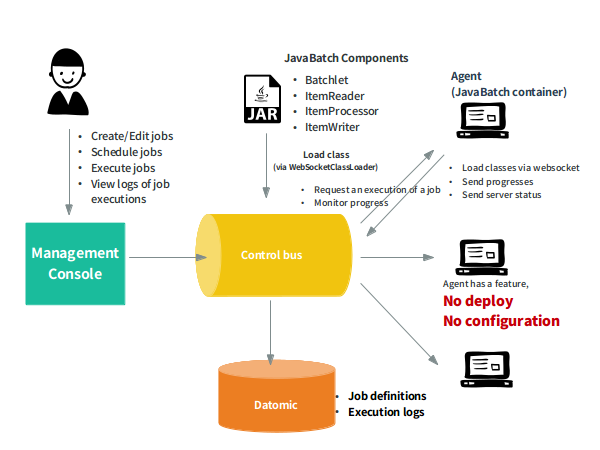

JobStreamer
Concept
JobStreamer is a distributed executing environment for JavaBatch jobs.
It can execute jobs that do not conform to JavaBatch.
Control bus is a control server of JobStreamer. It provides REST APIs and control all processes.
Agent is a job execution agent in JobStreamer. At the moment you start the virtual image without any configuration or deploy, it will be a execution server. So you can scale out easily according to the loading amount.
Management console is a front-end of JobStreamer. It has a function to call APIs on the Control-bus and display the result.